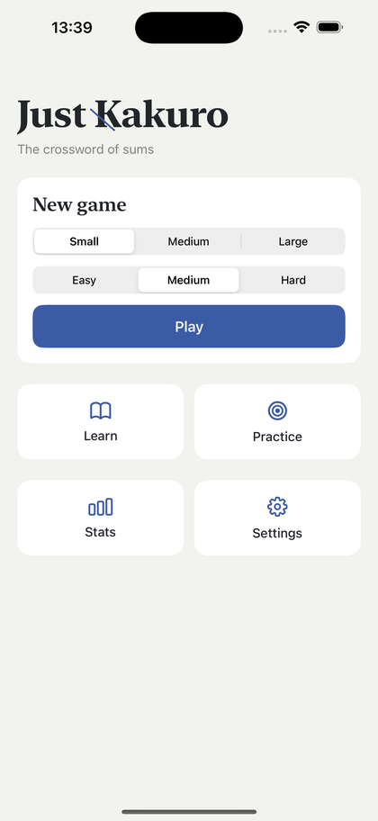
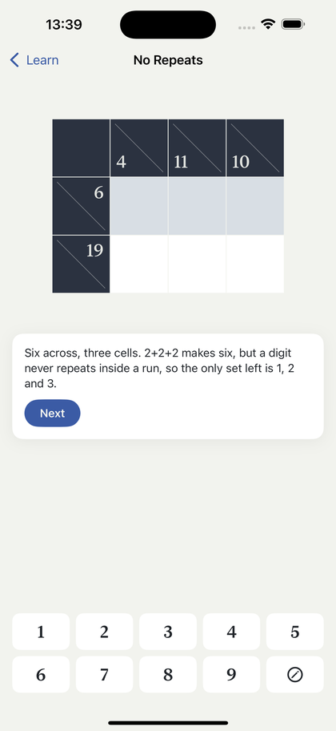
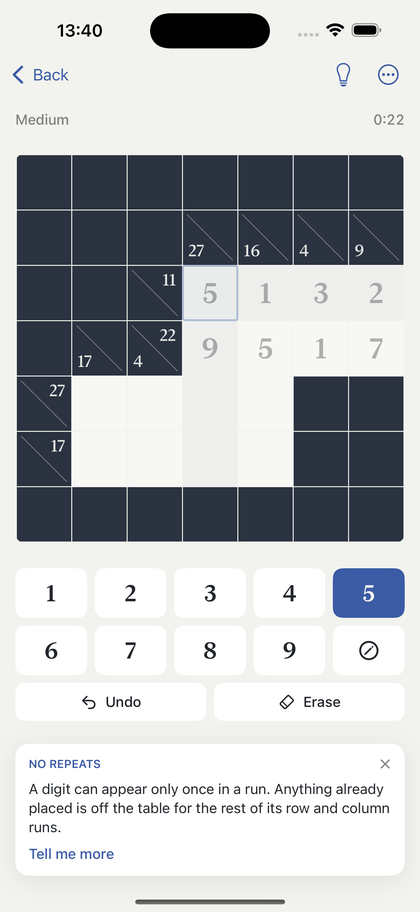
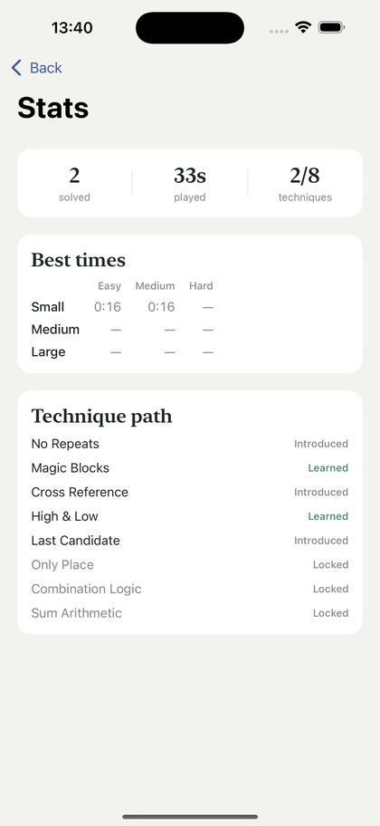

The crossword of sums.
Kakuro is a crossword with sums instead of words. Every run of white cells adds up to its clue, and no digit repeats inside a run. That is the whole rulebook. Getting good at it is another matter, which is what this app is for.




Nine lessons take you from the rules to the techniques experienced solvers use without thinking: magic blocks, cross-referencing, min-max bounds, hidden singles, combination logic.
When you get stuck in a real game, the hint button names the technique that applies and shows you why it works. It will fill the cell in if you insist, but that is the last thing it offers rather than the first.
Practice drills let you rehearse one technique at a time. Mastery counts only the deductions you worked out yourself, so the progress path reflects what you can actually do rather than how often you tapped the lightbulb.
This is checked rather than assumed. Before a board reaches you it is proved to have a single solution and to be finishable by reasoning alone. You are never asked to guess, and a puzzle that fails either test is never shown.
No ads, no subscription, and none of the timers, energy or coins that puzzle apps tend to arrive with. Everything works offline.
Just Kakuro does not collect any personal data. There is no account to create, nothing to log in to, and no analytics or advertising code in the app.
Your settings, progress, best times and technique mastery are saved on your device using the system's standard preferences storage. That data never leaves your device, and deleting the app deletes all of it.
The one optional purchase is handled entirely by Apple. The app asks Apple whether the purchase has been made and stores only that yes-or-no answer on your device. Payment details are never seen by the app or by me.
Apart from that purchase check, the app does not connect to the internet. Puzzles are generated on your device.
Bug reports and suggestions go to kai.kunze@gmail.com.